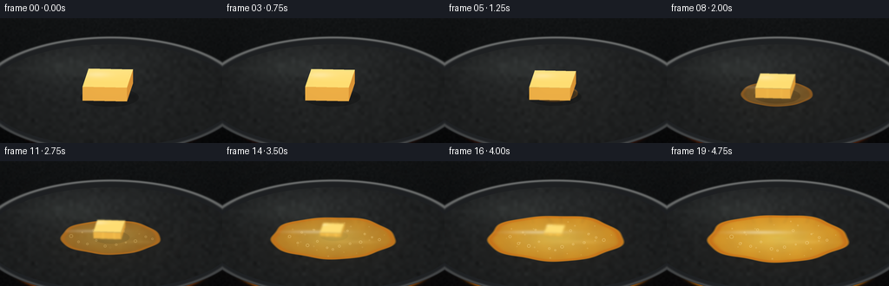
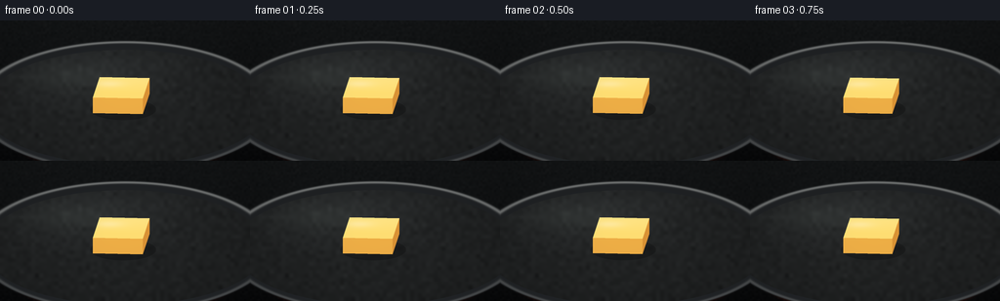
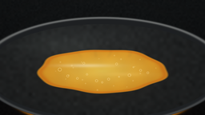

CODING AGENTS AS PIXEL WORLD MODELS
traex/GPT-5.6-Sol · phygen_098
点击播放 · 原生 RGB 像素
逐轮保存的候选
回放视频、检查图与代码变化。
每份候选均可单独播放。实际图片检查记录在下方工具轨迹中。
候选 01播放与检查图
点击播放 · 原生 RGB 像素


展开代码变化
--- 上一保存版本
+++ 本次保存版本
@@ -0,0 +1,233 @@
+from pathlib import Path
+import math
+import numpy as np
+from PIL import Image, ImageDraw, ImageFilter
+import artifact_io
+
+W,H,N = 256,144,20
+S=4
+w,h=W*S,H*S
+rng=np.random.default_rng(9801)
+Y,X=np.mgrid[0:h,0:w]
+xf=X/S; yf=Y/S
+
+# Stable, fine photographic texture used on every frame.
+noise_small=rng.normal(0,1,(72,128)).astype(np.float32)
+noise=np.asarray(Image.fromarray(noise_small, mode='F').resize((w,h),Image.Resampling.BICUBIC))
+noise2_small=rng.normal(0,1,(36,64)).astype(np.float32)
+noise2=np.asarray(Image.fromarray(noise2_small, mode='F').resize((w,h),Image.Resampling.BICUBIC))
+
+def smoothstep(x):
+ x=np.clip(x,0,1); return x*x*(3-2*x)
+
+def rgba_layer(rgb, alpha):
+ a=np.clip(alpha,0,1)[...,None]
+ return np.dstack([np.clip(rgb,0,255).astype(np.uint8), (a[...,0]*255).astype(np.uint8)])
+
+def comp(base, rgb, alpha):
+ a=np.clip(alpha,0,1)[...,None]
+ return base*(1-a)+rgb*a
+
+def mask_image(mask):
+ return Image.fromarray(np.uint8(np.clip(mask,0,1)*255),'L')
+
+def poly_mask(points, blur=0):
+ im=Image.new('L',(w,h),0); d=ImageDraw.Draw(im)
+ d.polygon([(int(a*S),int(b*S)) for a,b in points],fill=255)
+ if blur: im=im.filter(ImageFilter.GaussianBlur(blur*S))
+ return np.asarray(im,dtype=np.float32)/255
+
+def line_layer(points, fill, width, blur=0):
+ im=Image.new('RGBA',(w,h),(0,0,0,0)); d=ImageDraw.Draw(im)
+ pts=[(int(a*S),int(b*S)) for a,b in points]
+ d.line(pts,fill=fill,width=max(1,int(width*S)),joint='curve')
+ if blur: im=im.filter(ImageFilter.GaussianBlur(blur*S))
+ return im
+
+def composite_pil(arr, layer):
+ base=Image.fromarray(np.uint8(np.clip(arr,0,255)),'RGB').convert('RGBA')
+ return np.asarray(Image.alpha_composite(base,layer).convert('RGB'),dtype=np.float32)
+
+def ellipse_mask(cx,cy,rx,ry,soft=0.6):
+ q=np.sqrt(((xf-cx)/rx)**2+((yf-cy)/ry)**2)
+ return np.clip((1-q)/(soft/max(rx,ry))+0.5,0,1)
+
+frames=[]
+for fi in range(N):
+ t=fi/(N-1)
+ melt=smoothstep((t-0.04)/0.92)
+ heat=smoothstep(t)
+
+ # Deep kitchen background/counter: fixed camera, warmer as heat builds.
+ top=np.array([20,22,23],np.float32); bot=np.array([8,9,10],np.float32)
+ v=np.clip(yf/144,0,1)[...,None]
+ arr=top*(1-v)+bot*v
+ arr += noise[...,None]*1.3
+ # very subtle warm ambient light from the heating element
+ glow=np.exp(-(((xf-128)/115)**2+((yf-133)/38)**2)*2.0)[...,None]
+ arr += glow*np.array([24*heat,5*heat,0])
+
+ # Stove burner rings beneath the pan, going from dark to vivid orange-red.
+ ringq=np.sqrt(((xf-128)/105)**2+((yf-126)/31)**2)
+ ring=np.exp(-((ringq-1.0)/0.055)**2) * np.clip((yf-101)/23,0,1)
+ arr=comp(arr,np.dstack([np.full((h,w),242),np.full((h,w),44+90*heat),np.full((h,w),8)]),ring*(0.05+0.72*heat))
+ hotcore=np.exp(-((ringq-.78)/.065)**2)*np.clip((yf-111)/25,0,1)
+ arr=comp(arr,np.dstack([np.full((h,w),255),np.full((h,w),122),np.full((h,w),18)]),hotcore*0.34*heat)
+
+ # Heavy black skillet and elliptical rim.
+ outer=ellipse_mask(128,88,154,67,0.8)
+ panrgb=np.dstack([31+6*(yf/144),33+7*(yf/144),35+8*(yf/144)])
+ arr=comp(arr,panrgb,outer)
+ # Silver-black rim with a highlight at the upper edge.
+ qout=np.sqrt(((xf-128)/154)**2+((yf-88)/67)**2)
+ rim=np.exp(-((qout-.982)/.017)**2)
+ arr=comp(arr,np.dstack([np.full((h,w),88),np.full((h,w),91),np.full((h,w),92)]),rim*.86)
+ upperrim=rim*np.clip((83-yf)/30,0,1)
+ arr=comp(arr,np.dstack([np.full((h,w),155),np.full((h,w),157),np.full((h,w),154)]),upperrim*.48)
+ inner=ellipse_mask(128,89,145,59,0.7)
+ # seasoned iron gradient and mottling
+ panlight=34 + 10*np.exp(-(((xf-93)/90)**2+((yf-53)/34)**2)) + noise2*2.2
+ pan_col=np.dstack([panlight*.95,panlight,panlight*1.01])
+ arr=comp(arr,pan_col,inner)
+ # directional light reflection on pan
+ pan_sheen=np.exp(-(((xf-74)/64)**2+((yf-58)/19)**2)*2.1)*inner
+ arr += pan_sheen[...,None]*np.array([7,8,7])
+
+ # Intensifying warm reflection inside pan.
+ warm=np.exp(-(((xf-125)/76)**2+((yf-96)/31)**2)*1.5)*inner*heat
+ arr += warm[...,None]*np.array([9,5,0])
+
+ # Butter shadow and translucent melted pool. Pool expands with melting.
+ cx=126+1.5*melt; cy=86+3*melt
+ rx=18+62*melt; ry=7+20*melt
+ theta=np.arctan2((yf-cy)/max(ry,1),(xf-cx)/max(rx,1))
+ # stable scalloped edge, enlarges naturally
+ boundary=1 + (0.028*np.sin(5*theta+0.7)+0.018*np.sin(9*theta-1.3))*melt
+ q=np.sqrt(((xf-cx)/rx)**2+((yf-cy)/ry)**2)/boundary
+ pool=np.clip((1.025-q)/0.035,0,1) * (0.22+0.78*melt)
+ shadow=np.exp(-(((xf-(cx+2))/(rx+5))**2+((yf-(cy+3))/(ry+4))**2)*3.2)
+ arr=comp(arr,np.zeros_like(arr),shadow*(.13+.08*melt))
+
+ # Golden butter body, darker at edge, luminous in center.
+ radial=np.clip(q,0,1)
+ liquid=np.zeros_like(arr)
+ liquid[...,0]=238 + 12*(1-radial)
+ liquid[...,1]=143 + 48*(1-radial) + 17*heat
+ liquid[...,2]=35 + 48*(1-radial)
+ # mottled convection gives the liquid dimensionality
+ conv=(np.sin(xf*.11+yf*.16+fi*.31)+np.sin(xf*.23-yf*.09-fi*.22))*2.0
+ liquid[...,0]+=conv; liquid[...,1]+=conv*.7
+ arr=comp(arr,liquid,pool*(.70+.18*melt))
+ # amber edge meniscus
+ edge=np.exp(-((q-.96)/.045)**2)*pool
+ amber=np.dstack([np.full((h,w),210),np.full((h,w),113),np.full((h,w),24)])
+ arr=comp(arr,amber,edge*(.42+.24*melt))
+
+ # broad glossy reflections across the liquid
+ hi=np.exp(-(((xf-(102+4*melt))/(32+18*melt))**2+((yf-(78+4*melt))/(2.3+1.2*melt))**2)*2.3)*pool
+ arr=comp(arr,np.full_like(arr,255),hi*(.18+.16*melt))
+ hi2=np.exp(-(((xf-155)/(24+15*melt))**2+((yf-93)/(1.5+1.8*melt))**2)*2.0)*pool
+ arr=comp(arr,np.dstack([np.full((h,w),255),np.full((h,w),213),np.full((h,w),119)]),hi2*.18*melt)
+
+ # Remaining pat: initially a crisp cuboid, progressively smaller, lower and rounded.
+ remain=np.clip(1-melt**1.12,0,1)
+ if remain>0.025:
+ bw=58*(.38+.62*remain)
+ dep=22*(.45+.55*remain)
+ bh=2+14*remain
+ ccx=124+3*melt
+ topcy=69+9.5*melt
+ sl=7*(.5+.5*remain)
+ top=[(ccx-bw/2+sl,topcy-dep/2),(ccx+bw/2,topcy-dep/2+1),
+ (ccx+bw/2-sl,topcy+dep/2),(ccx-bw/2,topcy+dep/2-1)]
+ # cast shadow of solid pat
+ sm=ellipse_mask(ccx+2,topcy+dep/2+bh*.7,bw*.58,dep*.5,1.2)
+ arr=comp(arr,np.zeros_like(arr),sm*.24*remain)
+ blur=(1-remain)*1.35
+ # right/side face
+ right=[top[1],top[2],(top[2][0],top[2][1]+bh),(top[1][0],top[1][1]+bh)]
+ rm=poly_mask(right,blur)
+ right_col=np.dstack([np.full((h,w),226),np.full((h,w),151+18*melt),np.full((h,w),54)])
+ arr=comp(arr,right_col,rm*(.96 if remain>.1 else remain*10))
+ # front face
+ front=[top[3],top[2],(top[2][0],top[2][1]+bh),(top[3][0],top[3][1]+bh)]
+ fm=poly_mask(front,blur)
+ front_col=np.dstack([np.full((h,w),238),np.full((h,w),174+12*melt),np.full((h,w),70)])
+ arr=comp(arr,front_col,fm)
+ # top, pale and creamy with light from upper left
+ tm=poly_mask(top,blur)
+ trgb=np.zeros_like(arr)
+ trgb[...,0]=255
+ trgb[...,1]=222+10*np.clip((74-yf)/25,0,1)
+ trgb[...,2]=115+28*np.clip((74-yf)/25,0,1)
+ arr=comp(arr,trgb,tm)
+ # top highlight and slight golden softened border
+ th=np.exp(-(((xf-(ccx-12))/(bw*.38))**2+((yf-(topcy-4))/(dep*.23))**2)*2.2)*tm
+ arr=comp(arr,np.full_like(arr,255),th*.24)
+ # small melt rivulets down front after heating
+ if melt>.18:
+ for j,xx in enumerate([ccx-bw*.20,ccx+bw*.15]):
+ riv=np.exp(-((xf-xx)/(1.0+1.3*melt))**2-((yf-(topcy+dep/2+bh*.45))/(bh*.52+1))**4)*fm
+ arr=comp(arr,np.dstack([np.full((h,w),255),np.full((h,w),205),np.full((h,w),83)]),riv*.45*melt)
+
+ # Foamy bubbles appear around hot melted butter, deterministic locations.
+ bubble_specs=[(-53,-2,2.1),(-43,6,1.5),(-31,9,1.8),(-19,4,1.25),(-7,12,1.5),
+ (8,10,1.7),(21,7,1.1),(34,5,1.9),(48,-1,1.3),(57,2,1.65),
+ (-38,-7,1.0),(-23,-10,1.3),(18,-9,1.4),(39,-5,1.0),(0,14,1.2)]
+ bubble_amt=smoothstep((melt-.31)/.42)
+ for j,(dx,dy,br) in enumerate(bubble_specs):
+ # Slight time-lapse bubbling (radius pulses, fixed enough to preserve continuity)
+ life=smoothstep((t-(.28+j*.018))/0.16)
+ pulse=.83+.17*math.sin(fi*.72+j*1.7)
+ bx=cx+dx*(.60+.40*melt); by=cy+dy*(.55+.45*melt)
+ rr=br*pulse*(.7+.3*melt)
+ dist=np.sqrt((xf-bx)**2+((yf-by)*1.05)**2)
+ ringb=np.exp(-((dist-rr)/.38)**2)*pool
+ arr=comp(arr,np.dstack([np.full((h,w),255),np.full((h,w),227),np.full((h,w),149)]),ringb*.58*bubble_amt*life)
+ core=np.exp(-(dist/(rr*.72+0.1))**2)*pool
+ arr=comp(arr,np.dstack([np.full((h,w),171),np.full((h,w),92),np.full((h,w),19)]),core*.10*bubble_amt*life)
+
+ # Tiny foam flecks at the very end.
+ if melt>.62:
+ for j in range(20):
+ ang=j*2.399+0.4; rad=(.48+.42*((j*37)%17)/17)
+ px=cx+math.cos(ang)*rx*rad; py=cy+math.sin(ang)*ry*rad
+ rr=.45+.5*((j*13)%9)/9
+ dot=np.exp(-((xf-px)**2+(yf-py)**2)/(rr*rr))*pool
+ arr=comp(arr,np.full_like(arr,[255,225,151]),dot*.42*(melt-.62)/.38)
+
+ # Wispy steam visible only once butter is very hot.
+ steam=smoothstep((t-.48)/.40)
+ if steam>0:
+ for j in range(4):
+ sx=99+j*20 + 3*math.sin(j*2.1)
+ phase=fi*.47+j*1.5
+ pts=[]
+ for k in range(18):
+ yy=71-k*2.2
+ xx=sx+3.0*math.sin(k*.42+phase)+1.1*math.sin(k*.85-phase*.5)
+ pts.append((xx,yy))
+ layer=line_layer(pts,(235,228,204,int(45*steam)),.65+0.12*j,1.3)
+ arr=composite_pil(arr,layer)
+
+ # Heat shimmer: slight local horizontal refraction above the pan at late stages.
+ if heat>.35:
+ src=np.uint8(np.clip(arr,0,255))
+ shifted=src.copy()
+ strength=(heat-.35)/.65
+ for yy in range(24*S,69*S):
+ y0=yy/S
+ off=int(round(S*strength*0.45*math.sin(y0*.47+fi*.7)))
+ shifted[yy]=np.roll(src[yy],off,axis=0)
+ haze=np.clip((69-yf)/45,0,1)*np.clip((yf-22)/30,0,1)*strength*.18
+ arr=comp(arr,shifted.astype(np.float32),haze)
+
+ # Lens vignette and a consistent fine grain.
+ vig=np.clip((((xf-128)/154)**2+((yf-72)/102)**2),0,1)[...,None]
+ arr*=1-.18*vig
+ frame=Image.fromarray(np.uint8(np.clip(arr,0,255)),'RGB').resize((W,H),Image.Resampling.LANCZOS)
+ frames.append(np.asarray(frame,dtype=np.uint8))
+
+frames=np.stack(frames)
+artifact_io.save(frames,Path(__file__).resolve().parent)
+print('saved',frames.shape,frames.dtype)
可观测工具轨迹
实际执行的命令与返回图片。
命令 1exit 0
/bin/bash -lc "cat prompt.txt && printf '\\n---RULES---\\n' && cat GENERATION_RULES.md && printf '\\n---SPEC---\\n' && cat task_spec.json"
命令 2exit 0
/bin/bash -lc "find . -maxdepth 2 -type f -printf '%p\\n' | sort | head -200"
命令 3exit 0
/bin/bash -lc 'cat artifact_io.py'
命令 4exit 0
/bin/bash -lc "cat > generate.py <<'PY'
from pathlib import Path
import math
import numpy as np
from PIL import Image, ImageDraw, ImageFilter
import artifact_io
W,H,N = 256,144,20
S=4
w,h=W*S,H*S
rng=np.random.default_rng(9801)
Y,X=np.mgrid[0:h,0:w]
xf=X/S; yf=Y/S
# Stable, fine photographic texture used on every frame.
noise_small=rng.normal(0,1,(72,128)).astype(np.float32)
noise=np.asarray(Image.fromarray(noise_small, mode='F').resize((w,h),Image.Resampling.BICUBIC))
noise2_small=rng.normal(0,1,(36,64)).astype(np.float32)
noise2=np.asarray(Image.fromarray(noise2_small, mode='F').resize((w,h),Image.Resampling.BICUBIC))
def smoothstep(x):
x=np.clip(x,0,1); return x*x*(3-2*x)
def rgba_layer(rgb, alpha):
a=np.clip(alpha,0,1)[...,None]
return np.dstack([np.clip(rgb,0,255).astype(np.uint8), (a[...,0]*255).astype(np.uint8)])
def comp(base, rgb, alpha):
a=np.clip(alpha,0,1)[...,None]
return base*(1-a)+rgb*a
def mask_image(mask):
return Image.fromarray(np.uint8(np.clip(mask,0,1)*255),'L')
def poly_mask(points, blur=0):
im=Image.new('L',(w,h),0); d=ImageDraw.Draw(im)
d.polygon([(int(a*S),int(b*S)) for a,b in points],fill=255)
if blur: im=im.filter(ImageFilter.GaussianBlur(blur*S))
return np.asarray(im,dtype=np.float32)/255
def line_layer(points, fill, width, blur=0):
im=Image.new('RGBA',(w,h),(0,0,0,0)); d=ImageDraw.Draw(im)
pts=[(int(a*S),int(b*S)) for a,b in points]
d.line(pts,fill=fill,width=max(1,int(width*S)),joint='curve')
if blur: im=im.filter(ImageFilter.GaussianBlur(blur*S))
return im
def composite_pil(arr, layer):
base=Image.fromarray(np.uint8(np.clip(arr,0,255)),'RGB').convert('RGBA')
return np.asarray(Image.alpha_composite(base,layer).convert('RGB'),dtype=np.float32)
def ellipse_mask(cx,cy,rx,ry,soft=0.6):
q=np.sqrt(((xf-cx)/rx)**2+((yf-cy)/ry)**2)
return np.clip((1-q)/(soft/max(rx,ry))+0.5,0,1)
frames=[]
for fi in range(N):
t=fi/(N-1)
melt=smoothstep((t-0.04)/0.92)
heat=smoothstep(t)
# Deep kitchen background/counter: fixed camera, warmer as heat builds.
top=np.array([20,22,23],np.float32); bot=np.array([8,9,10],np.float32)
v=np.clip(yf/144,0,1)[...,None]
arr=top*(1-v)+bot*v
arr += noise[...,None]*1.3
# very subtle warm ambient light from the heating element
glow=np.exp(-(((xf-128)/115)**2+((yf-133)/38)**2)*2.0)[...,None]
arr += glow*np.array([24*heat,5*heat,0])
# Stove burner rings beneath the pan, going from dark to vivid orange-red.
ringq=np.sqrt(((xf-128)/105)**2+((yf-126)/31)**2)
ring=np.exp(-((ringq-1.0)/0.055)**2) * np.clip((yf-101)/23,0,1)
arr=comp(arr,np.dstack([np.full((h,w),242),np.full((h,w),44+90*heat),np.full((h,w),8)]),ring*(0.05+0.72*heat))
hotcore=np.exp(-((ringq-.78)/.065)**2)*np.clip((yf-111)/25,0,1)
arr=comp(arr,np.dstack([np.full((h,w),255),np.full((h,w),122),np.full((h,w),18)]),hotcore*0.34*heat)
# Heavy black skillet and elliptical rim.
outer=ellipse_mask(128,88,154,67,0.8)
panrgb=np.dstack([31+6*(yf/144),33+7*(yf/144),35+8*(yf/144)])
arr=comp(arr,panrgb,outer)
# Silver-black rim with a highlight at the upper edge.
qout=np.sqrt(((xf-128)/154)**2+((yf-88)/67)**2)
rim=np.exp(-((qout-.982)/.017)**2)
arr=comp(arr,np.dstack([np.full((h,w),88),np.full((h,w),91),np.full((h,w),92)]),rim*.86)
upperrim=rim*np.clip((83-yf)/30,0,1)
arr=comp(arr,np.dstack([np.full((h,w),155),np.full((h,w),157),np.full((h,w),154)]),upperrim*.48)
inner=ellipse_mask(128,89,145,59,0.7)
# seasoned iron gradient and mottling
panlight=34 + 10*np.exp(-(((xf-93)/90)**2+((yf-53)/34)**2)) + noise2*2.2
pan_col=np.dstack([panlight*.95,panlight,panlight*1.01])
arr=comp(arr,pan_col,inner)
# directional light reflection on pan
pan_sheen=np.exp(-(((xf-74)/64)**2+((yf-58)/19)**2)*2.1)*inner
arr += pan_sheen[...,None]*np.array([7,8,7])
# Intensifying warm reflection inside pan.
warm=np.exp(-(((xf-125)/76)**2+((yf-96)/31)**2)*1.5)*inner*heat
arr += warm[...,None]*np.array([9,5,0])
# Butter shadow and translucent melted pool. Pool expands with melting.
cx=126+1.5*melt; cy=86+3*melt
rx=18+62*melt; ry=7+20*melt
theta=np.arctan2((yf-cy)/max(ry,1),(xf-cx)/max(rx,1))
# stable scalloped edge, enlarges naturally
boundary=1 + (0.028*np.sin(5*theta+0.7)+0.018*np.sin(9*theta-1.3))*melt
q=np.sqrt(((xf-cx)/rx)**2+((yf-cy)/ry)**2)/boundary
pool=np.clip((1.025-q)/0.035,0,1) * (0.22+0.78*melt)
shadow=np.exp(-(((xf-(cx+2))/(rx+5))**2+((yf-(cy+3))/(ry+4))**2)*3.2)
arr=comp(arr,np.zeros_like(arr),shadow*(.13+.08*melt))
# Golden butter body, darker at edge, luminous in center.
radial=np.clip(q,0,1)
liquid=np.zeros_like(arr)
liquid[...,0]=238 + 12*(1-radial)
liquid[...,1]=143 + 48*(1-radial) + 17*heat
liquid[...,2]=35 + 48*(1-radial)
# mottled convection gives the liquid dimensionality
conv=(np.sin(xf*.11+yf*.16+fi*.31)+np.sin(xf*.23-yf*.09-fi*.22))*2.0
liquid[...,0]+=conv; liquid[...,1]+=conv*.7
arr=comp(arr,liquid,pool*(.70+.18*melt))
# amber edge meniscus
edge=np.exp(-((q-.96)/.045)**2)*pool
amber=np.dstack([np.full((h,w),210),np.full((h,w),113),np.full((h,w),24)])
arr=comp(arr,amber,edge*(.42+.24*melt))
# broad glossy reflections across the liquid
hi=np.exp(-(((xf-(102+4*melt))/(32+18*melt))**2+((yf-(78+4*melt))/(2.3+1.2*melt))**2)*2.3)*pool
arr=comp(arr,np.full_like(arr,255),hi*(.18+.16*melt))
hi2=np.exp(-(((xf-155)/(24+15*melt))**2+((yf-93)/(1.5+1.8*melt))**2)*2.0)*pool
arr=comp(arr,np.dstack([np.full((h,w),255),np.full((h,w),213),np.full((h,w),119)]),hi2*.18*melt)
# Remaining pat: initially a crisp cuboid, progressively smaller, lower and rounded.
remain=np.clip(1-melt**1.12,0,1)
if remain>0.025:
bw=58*(.38+.62*remain)
dep=22*(.45+.55*remain)
bh=2+14*remain
ccx=124+3*melt
topcy=69+9.5*melt
sl=7*(.5+.5*remain)
top=[(ccx-bw/2+sl,topcy-dep/2),(ccx+bw/2,topcy-dep/2+1),
(ccx+bw/2-sl,topcy+dep/2),(ccx-bw/2,topcy+dep/2-1)]
# cast shadow of solid pat
sm=ellipse_mask(ccx+2,topcy+dep/2+bh*.7,bw*.58,dep*.5,1.2)
arr=comp(arr,np.zeros_like(arr),sm*.24*remain)
blur=(1-remain)*1.35
# right/side face
right=[top[1],top[2],(top[2][0],top[2][1]+bh),(top[1][0],top[1][1]+bh)]
rm=poly_mask(right,blur)
right_col=np.dstack([np.full((h,w),226),np.full((h,w),151+18*melt),np.full((h,w),54)])
arr=comp(arr,right_col,rm*(.96 if remain>.1 else remain*10))
# front face
front=[top[3],top[2],(top[2][0],top[2][1]+bh),(top[3][0],top[3][1]+bh)]
fm=poly_mask(front,blur)
front_col=np.dstack([np.full((h,w),238),np.full((h,w),174+12*melt),np.full((h,w),70)])
arr=comp(arr,front_col,fm)
# top, pale and creamy with light from upper left
tm=poly_mask(top,blur)
trgb=np.zeros_like(arr)
trgb[...,0]=255
trgb[...,1]=222+10*np.clip((74-yf)/25,0,1)
trgb[...,2]=115+28*np.clip((74-yf)/25,0,1)
arr=comp(arr,trgb,tm)
# top highlight and slight golden softened border
th=np.exp(-(((xf-(ccx-12))/(bw*.38))**2+((yf-(topcy-4))/(dep*.23))**2)*2.2)*tm
arr=comp(arr,np.full_like(arr,255),th*.24)
# small melt rivulets down front after heating
if melt>.18:
for j,xx in enumerate([ccx-bw*.20,ccx+bw*.15]):
riv=np.exp(-((xf-xx)/(1.0+1.3*melt))**2-((yf-(topcy+dep/2+bh*.45))/(bh*.52+1))**4)*fm
arr=comp(arr,np.dstack([np.full((h,w),255),np.full((h,w),205),np.full((h,w),83)]),riv*.45*melt)
# Foamy bubbles appear around hot melted butter, deterministic locations.
bubble_specs=[(-53,-2,2.1),(-43,6,1.5),(-31,9,1.8),(-19,4,1.25),(-7,12,1.5),
(8,10,1.7),(21,7,1.1),(34,5,1.9),(48,-1,1.3),(57,2,1.65),
(-38,-7,1.0),(-23,-10,1.3),(18,-9,1.4),(39,-5,1.0),(0,14,1.2)]
bubble_amt=smoothstep((melt-.31)/.42)
for j,(dx,dy,br) in enumerate(bubble_specs):
# Slight time-lapse bubbling (radius pulses, fixed enough to preserve continuity)
life=smoothstep((t-(.28+j*.018))/0.16)
pulse=.83+.17*math.sin(fi*.72+j*1.7)
bx=cx+dx*(.60+.40*melt); by=cy+dy*(.55+.45*melt)
rr=br*pulse*(.7+.3*melt)
dist=np.sqrt((xf-bx)**2+((yf-by)*1.05)**2)
ringb=np.exp(-((dist-rr)/.38)**2)*pool
arr=comp(arr,np.dstack([np.full((h,w),255),np.full((h,w),227),np.full((h,w),149)]),ringb*.58*bubble_amt*life)
core=np.exp(-(dist/(rr*.72+0.1))**2)*pool
arr=comp(arr,np.dstack([np.full((h,w),171),np.full((h,w),92),np.full((h,w),19)]),core*.10*bubble_amt*life)
# Tiny foam flecks at the very end.
if melt>.62:
for j in range(20):
ang=j*2.399+0.4; rad=(.48+.42*((j*37)%17)/17)
px=cx+math.cos(ang)*rx*rad; py=cy+math.sin(ang)*ry*rad
rr=.45+.5*((j*13)%9)/9
dot=np.exp(-((xf-px)**2+(yf-py)**2)/(rr*rr))*pool
arr=comp(arr,np.full_like(arr,[255,225,151]),dot*.42*(melt-.62)/.38)
# Wispy steam visible only once butter is very hot.
steam=smoothstep((t-.48)/.40)
if steam>0:
for j in range(4):
sx=99+j*20 + 3*math.sin(j*2.1)
phase=fi*.47+j*1.5
pts=[]
for k in range(18):
yy=71-k*2.2
xx=sx+3.0*math.sin(k*.42+phase)+1.1*math.sin(k*.85-phase*.5)
pts.append((xx,yy))
layer=line_layer(pts,(235,228,204,int(45*steam)),.65+0.12*j,1.3)
arr=composite_pil(arr,layer)
# Heat shimmer: slight local horizontal refraction above the pan at late stages.
if heat>.35:
src=np.uint8(np.clip(arr,0,255))
shifted=src.copy()
strength=(heat-.35)/.65
for yy in range(24*S,69*S):
y0=yy/S
off=int(round(S*strength*0.45*math.sin(y0*.47+fi*.7)))
shifted[yy]=np.roll(src[yy],off,axis=0)
haze=np.clip((69-yf)/45,0,1)*np.clip((yf-22)/30,0,1)*strength*.18
arr=comp(arr,shifted.astype(np.float32),haze)
# Lens vignette and a consistent fine grain.
vig=np.clip((((xf-128)/154)**2+((yf-72)/102)**2),0,1)[...,None]
arr*=1-.18*vig
frame=Image.fromarray(np.uint8(np.clip(arr,0,255)),'RGB').resize((W,H),Image.Resampling.LANCZOS)
frames.append(np.asarray(frame,dtype=np.uint8))
frames=np.stack(frames)
artifact_io.save(frames,Path(__file__).resolve().parent)
print('saved',frames.shape,frames.dtype)
PY
python generate.py"命令 5exit 0
/bin/bash -lc "ls -lh pixels.npz index.html inspection.png transition_check.png frames/00.png frames/19.png && python - <<'PY'
import numpy as np
x=np.load('pixels.npz')['pixels']
print(x.shape,x.dtype,'unique frames',len({x[:,:,i].tobytes() for i in range(x.shape[2])}))
PY"视觉工具实际返回图片 1

视觉工具实际返回图片 2

保存候选 1 份；完成命令 5 次；可验证图片返回 2 张。原始 API 响应与完整日志保留在本地。